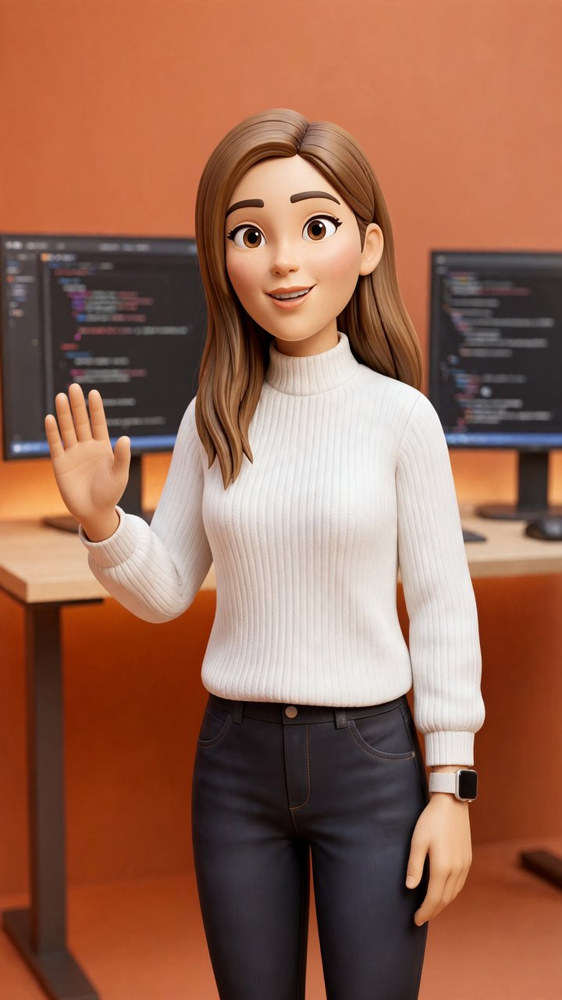

Bonjour, je suis Eya.
Je développe des applications web et mobiles.
Développeuse full-stack web et mobile, forte de deux ans d'expérience en production : ERP/CRM B2B chez ICT, APIs et dashboards chez Lunar TC. À l'aise sur PHP, Java, .NET, Angular et Flutter.

À propos
Chez ICT, j'ai conçu et fait évoluer les modules métier d'un ERP/CRM B2B en production : facturation, avoirs, reçus de paiement, caisse, ainsi que la gestion des rôles et des permissions. Avant cela, chez Lunar TC, j'ai développé des APIs REST sécurisées en Spring Boot et une application de dashboarding connectée à plusieurs bases MongoDB.
Je prépare aujourd'hui le diplôme d'ingénieur en génie logiciel à l'IIT de Sfax. Je m'intéresse aussi à l'IA appliquée, du deep learning sur signaux médicaux aux outils comme Claude Code ou GitHub Copilot.